03 / Style study
Microsoft Art Style Index.
Learn to look at art through 105 studies of Microsoft. Start with the shape of a pose and a few marks, then work through materials, composition, and design before comparing generations of game graphics. The generated studies illustrate the techniques. Their info buttons link to historical examples.
Start with shapes and marks
Use the recurring portrait to practice seeing outlines, values, and edges. Then ask how the drawing tool changes what you can see.
Read a figure at a glance
Compare how a pose stays clear when you take away detail.
Anime cel shading
Compare the borders of the shadows on Microsoft’s jacket. Cel shading uses separate patches of light and dark to make a pose readable quickly.

- Top left: Classic anime cel
- A single firm shadow across the blue sleeve makes the elbow turn.
- Top right: Soft cel
- Soft shading rounds the knees while the outer contour stays crisp.
- Bottom left: Minimal flat cel
- The navy jacket and the white seat separate in large, simple shapes.
- Bottom right: High contrast cel
- Small bright edges carry the face and hands against a much darker suit.
Manga ink and screentone
Start with the darkest areas of the jacket. Each square makes a gray or a shadow with a different mix of solid ink, dots, and strokes.

- Top left: Solid blacks
- The connected black jacket gives the portrait weight without many interior lines.
- Top right: Dot screentone
- A field of dots makes gray at reading distance while keeping the outline crisp.
- Bottom left: Crosshatching
- Several angled sets of strokes turn the sleeve into a readable volume.
- Bottom right: Noir lighting
- Light picks out the glasses and cheek while much of the figure sinks into shadow.
Pixel art
Look for the tiny groups of pixels that still read as hair, glasses, and a raised hand. Notice how each study spends its limited colors.
- Top left: One-bit silhouette
- Two values leave the gap beside the hand and the angle of the knee to explain the pose.
- Top right: Four-color portrait
- A dark blue defines the outline and shades the suit. Cream lights the face and seat.
- Bottom left: Dithered shading
- Alternating pixels make a middle tone while solid pixels hold the edge.
- Bottom right: Arcade sprite
- Compact clusters of highlight keep the face readable on a game-sized screen.
Draw or paint the same form
Move from dry marks to washes and opaque layers, then test what you can build from separate pieces.

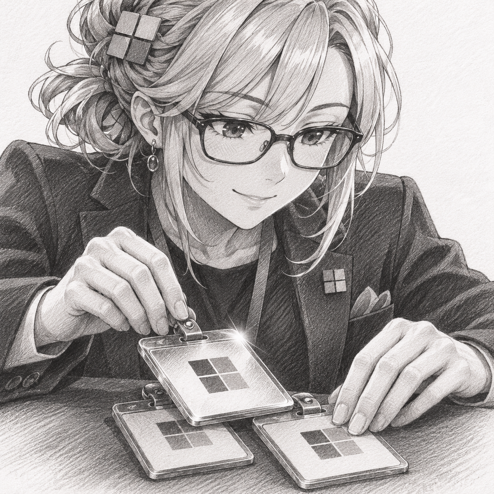
Graphite drawing
Follow the pencil lines on the sleeve, then look at the pale badge. Value means how light or dark a shape appears.
Charcoal drawing
Squint at the face, suit, and cube. Charcoal can give you a thin line or a broad dark patch with a turn of the stick.
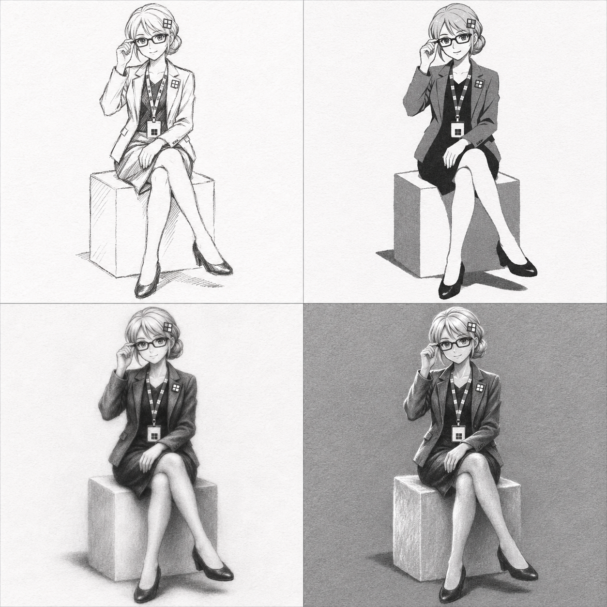
- Top left: Line study
- The bent elbow and knee read through a few changes in the direction of the line.
- Top right: Three-value block-in
- Light skin, middle-gray seat, and dark jacket turn the pose into three large masses.
- Bottom left: Blended charcoal
- Soft shading rounds the legs. The glasses regain a harder edge near the face.
- Bottom right: Charcoal on toned paper
- The gray paper is already a middle tone. Pale marks pick out what catches the light.

Pen and ink illustration
Follow the receiving fingers against the black sleeve. The thickness of an ink line changes how strongly its edge attracts attention.
Colored pencil
Look at the sleeve and hair for lines that follow the form. In other squares the grain of the paper fills in under denser pencil.
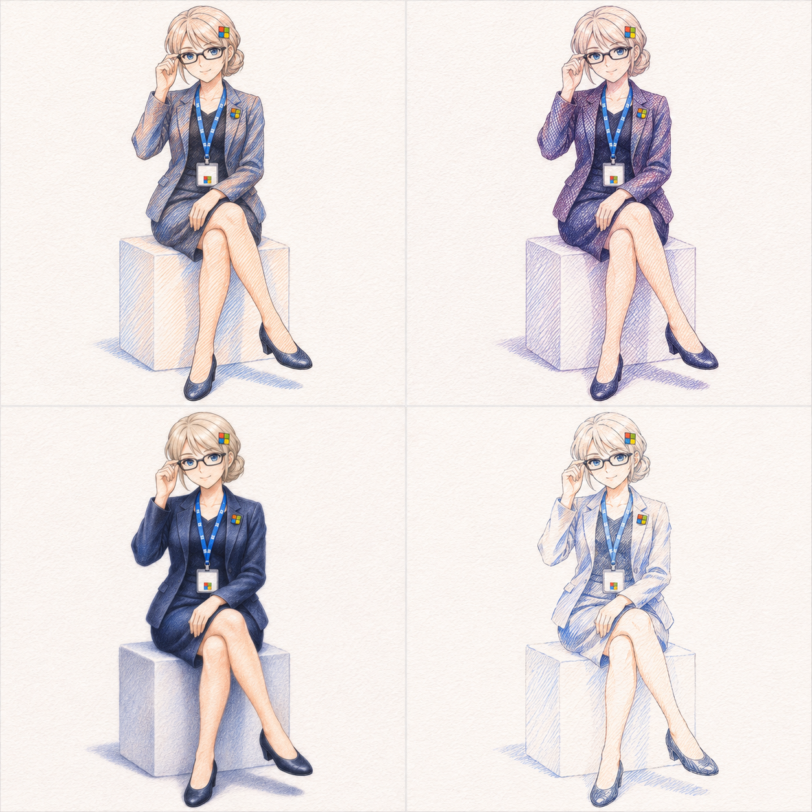
- Top left: Directional hatching
- The strokes run with the hair and sleeve, so the line direction suggests their shape.
- Top right: Crosshatched shadows
- Indigo and violet strokes cross in the suit to deepen the shadow with two colors.
- Bottom left: Burnished color
- Pressure and layers fill the paper grain, making the dark blue look almost solid.
- Bottom right: Open paper
- The pale paper remains in the light areas. Short marks near the face give it definition.
Soft pastel
Look closely at a warm stroke beside a cool one, then step back. Dry pastel can stay visibly grainy or be rubbed into a softer blend.

- Top left: Gentle blending
- The cheek and knees move between tones without a firm border.
- Top right: Broken color
- Warm and cool marks still show separately up close. Step back and they mix in your eye.
- Bottom left: Toned paper
- Blue-gray showing through the picture gives the shadows and lights a shared starting tone.
- Bottom right: Sharp focal accents
- A few firm marks near the glasses stay sharp against the broad, soft color.

Ink wash
Follow the jacket from near-black to pale gray at the window. A wash is ink or paint diluted into a thin layer.
Watercolor
Compare the sharp glasses with a shoulder that fades into the paper. Watercolor lets the light paper show through transparent color.

- Top left: Loose watercolor
- The seat is barely outlined, while the clearer features are enough to hold the figure together.
- Top right: Controlled watercolor
- Distinct layers make the jacket dark while leaving the seat bright.
- Bottom left: Ink and watercolor
- An ink line defines the glasses. Color can spread more loosely around it.
- Bottom right: Wet-on-wet watercolor
- Color softens at the shoulders and lower figure where damp-looking edges run together.
Gouache
Find a pale shape that looks solid over a darker one. Gouache is an opaque water-based paint that can cover a previous layer.

- Top left: Flat color blocks
- The seat and jacket meet in firm-edged shapes of cream and navy.
- Top right: Warm and cool planes
- Cool blues and warm skin tones show different sides of a form in distinct patches.
- Bottom left: Limited palette
- A few repeated mixtures make the figure and seat feel painted as one picture.
- Bottom right: Dry brush
- A broken brush edge lets the paper texture interrupt an otherwise solid patch.

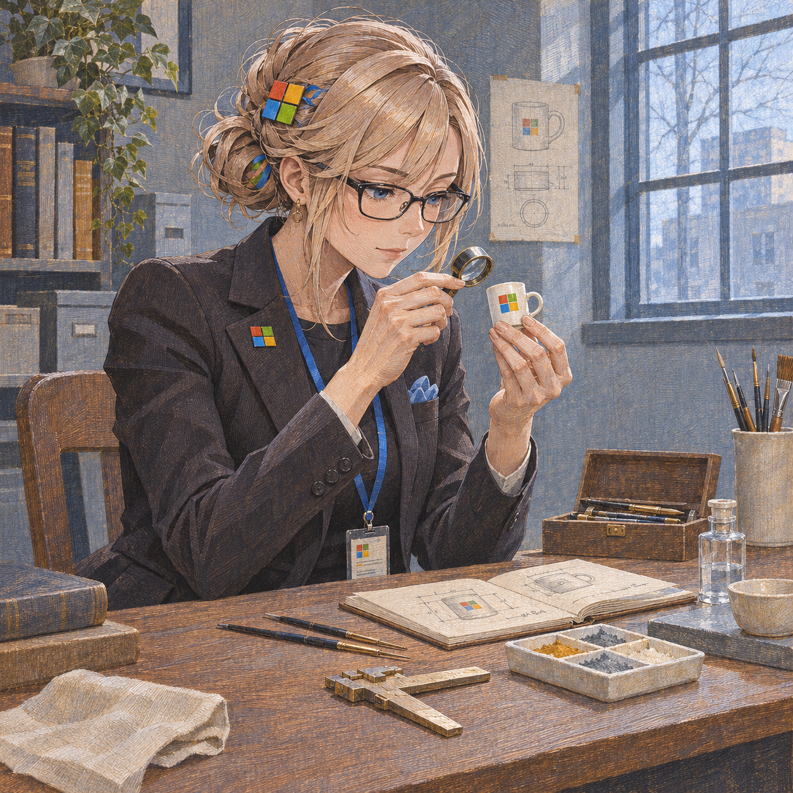
Egg tempera
Look at the small strokes that build the face and workbench. Traditional egg tempera binds pigment with egg and dries quickly.

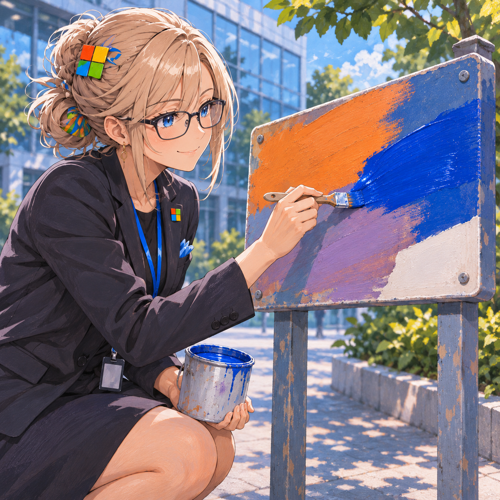
Acrylic painting
Compare the solid blue stroke with the violet passage where orange shows through. Acrylic can cover or tint what lies underneath.
Oil painting
Compare the skin, the raised-looking brush marks, and the darkest portrait. These squares separate three choices: how thickly you paint, how you mix, and where you place the light.
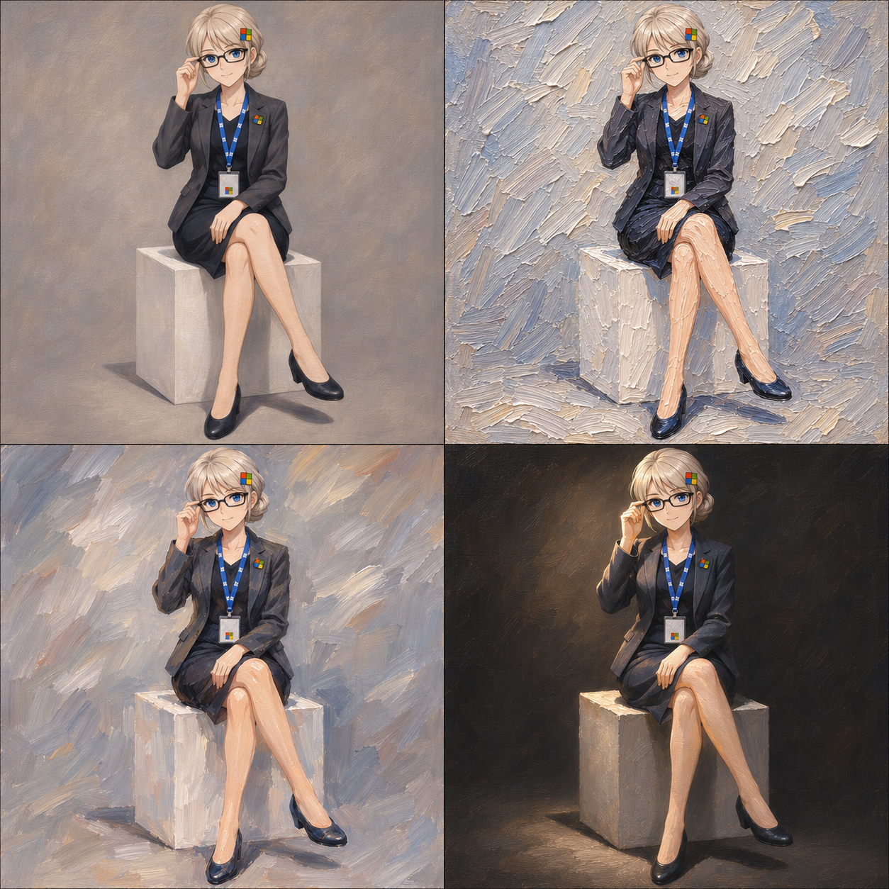
- Top left: Classical oil portrait
- Small shifts in tone round the face, with the glasses giving it its firmest line.
- Top right: Impasto
- Raised-looking strokes describe direction as well as color. Real impasto adds physical paint thickness.
- Bottom left: Alla prima
- Look for a broad stroke where two neighboring colors meet and partly mix.
- Bottom right: Chiaroscuro
- A large field of shadow leaves just enough light for the face to become the focus.
Digital painting
Compare the cheek, glasses, and jacket edges in each square. Digital brushes can imitate very different kinds of paint and light.
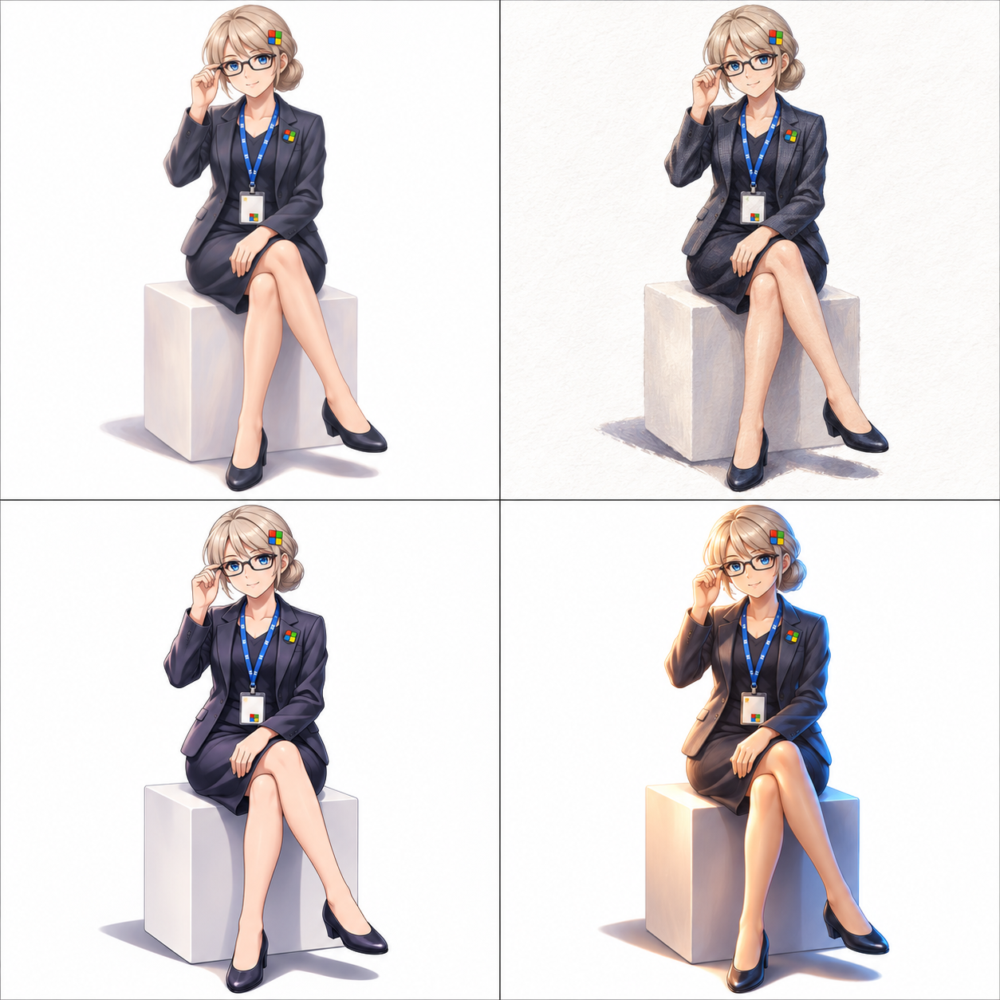
- Top left: Soft painterly
- The softly shaded face gives the sharper glasses a place to stand out.
- Top right: Textured digital
- Tactile marks on the jacket make fabric and skin feel like different surfaces.
- Bottom left: Anime influenced
- Firm outlines keep the features easy to read through softly shaded hair and cloth.
- Bottom right: Cinematic digital
- A warm edge light gives the hair and shoulder enough contrast to separate from the background.
Paper collage
Notice where one piece seems cut cleanly and another seems torn. An overlap tells you which shape sits in front.

- Top left: Hard cut paper
- The clean joins at the lapel, shoes, and cube look like pieces cut to fit.
- Top right: Torn paper
- Fibrous edges make the same shapes feel softer even where the outline is clear.
- Bottom left: Layered textures
- Different paper textures and tiny overlaps tell you which piece lies over another.
- Bottom right: Two-color silhouette
- The raised hand reads because the pale space cuts far enough into the dark jacket.

Vector illustration
The glasses and radio dial reuse circles at different sizes. In a vector drawing, editable paths define the shapes.
From paper to objects and walls
Follow what changes when a picture is printed, photographed, worn, turned in the hand, or read across a wall or page.
Print an image
Follow the ink. The surface that holds it determines which marks appear on the paper.
Woodblock-inspired print
Find a pale cut against one of the dark areas. In a relief print, the raised surface carries the ink while the cut-away area leaves paper exposed.

- Top left: Four-ink contour
- Dark contours keep four ink-like color areas aligned around the figure.
- Top right: Two inks and paper
- Two ink colors and the paper give the portrait three levels of emphasis.
- Bottom left: Interlocking shapes
- Pale cuts define the point where the dark suit and cube meet.
- Bottom right: Graded ink
- A gradual change of tone softens the background while the figure edge stays crisp.

Linocut
Follow the pale cuts that free the folder and glasses from the surrounding black. The tool removes the parts that will stay pale.

Copperplate etching
Follow the close-set lines along the machinery. Here the fine dark marks suggest ink printing from grooves in a metal plate.

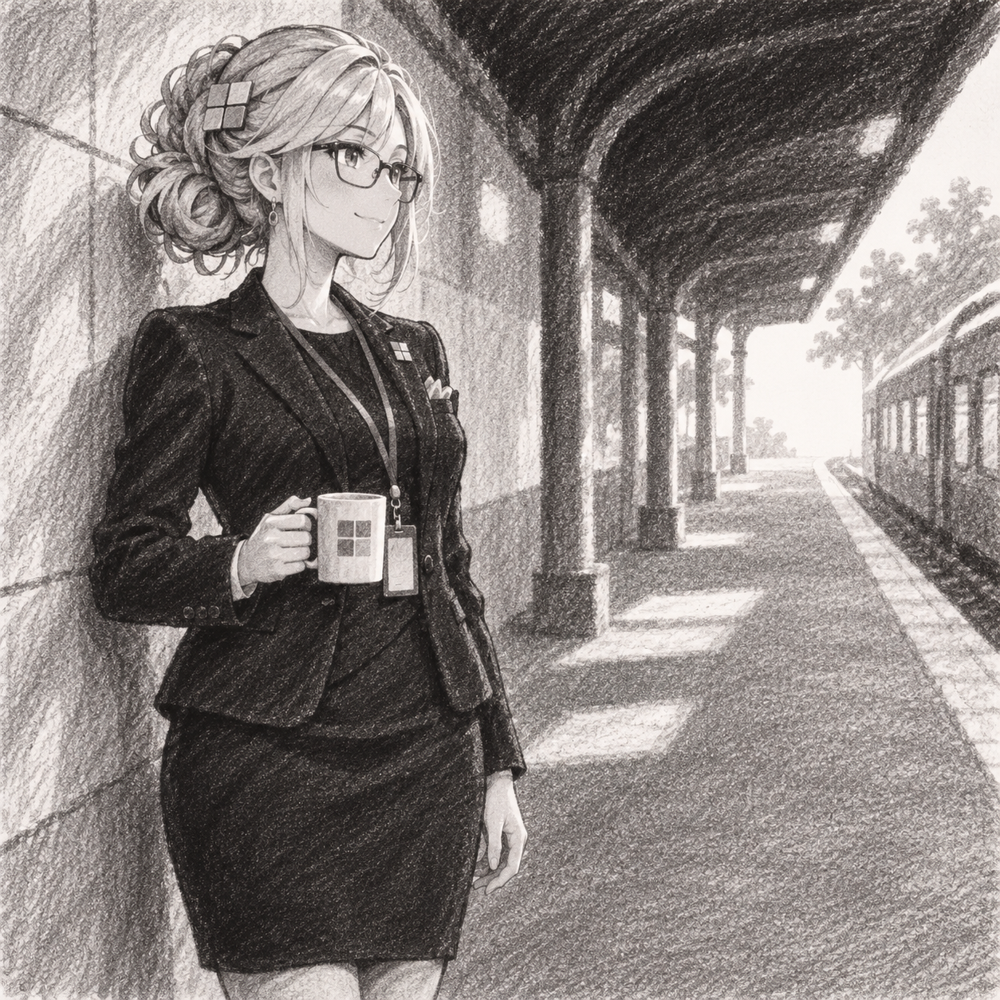
Lithography
Look for the grain on the gray platform and coat. Lithography can carry a drawn crayon mark from a flat printing surface.

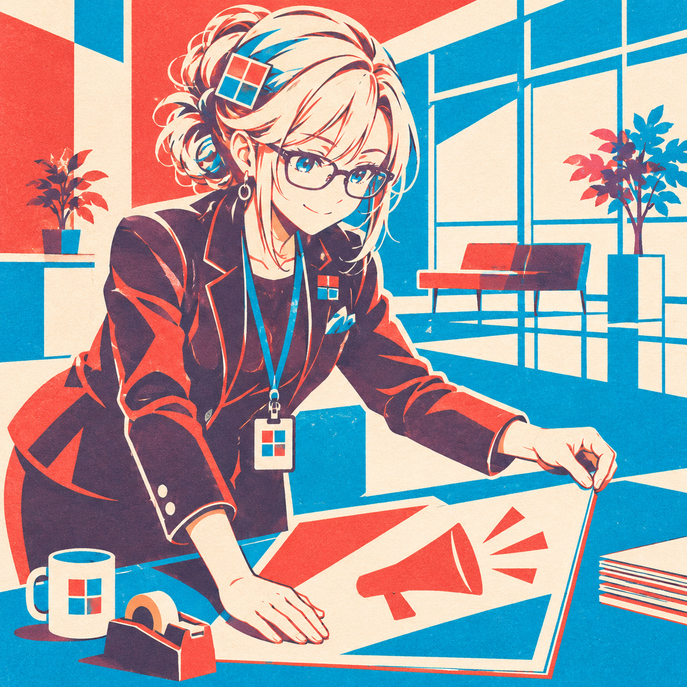
Screenprinting
Find the red and blue shapes at the table and one place they overlap. A screen stencil lets ink through in selected areas.
Ukiyo-e
Start with the cut-off umbrella, then look through the door and across the rooftops. The frame can make you feel close to an everyday scene.

- Top left: Rainy commute
- The frame cuts through the umbrella, as if you caught the commuter passing.
- Top right: Through the doorway
- The near doorway hides part of the room and makes the viewer peer into a second space.
- Bottom left: Hands and glasses
- The glasses and sleeve make a small hand movement fill almost the entire frame.
- Bottom right: Balcony rooftops
- Overlapping rooflines step back through the city beyond the near railing.
Four ways to pull an impression
Compare what makes the darkest marks and what leaves the paper exposed. Open any square to read about its process.
Read a camera image
Compare an object’s direct trace with a camera’s point of view and a painting that simulates one.

Cyanotype
The opaque badge stays pale while fern details show through in blue. Objects laid on light-sensitive paper control how much light reaches it.

Pictorialist photography
Compare the soft lamp halo with the barely visible windows. Pictorialist photographers used tone and focus to give photographs a painterly atmosphere.

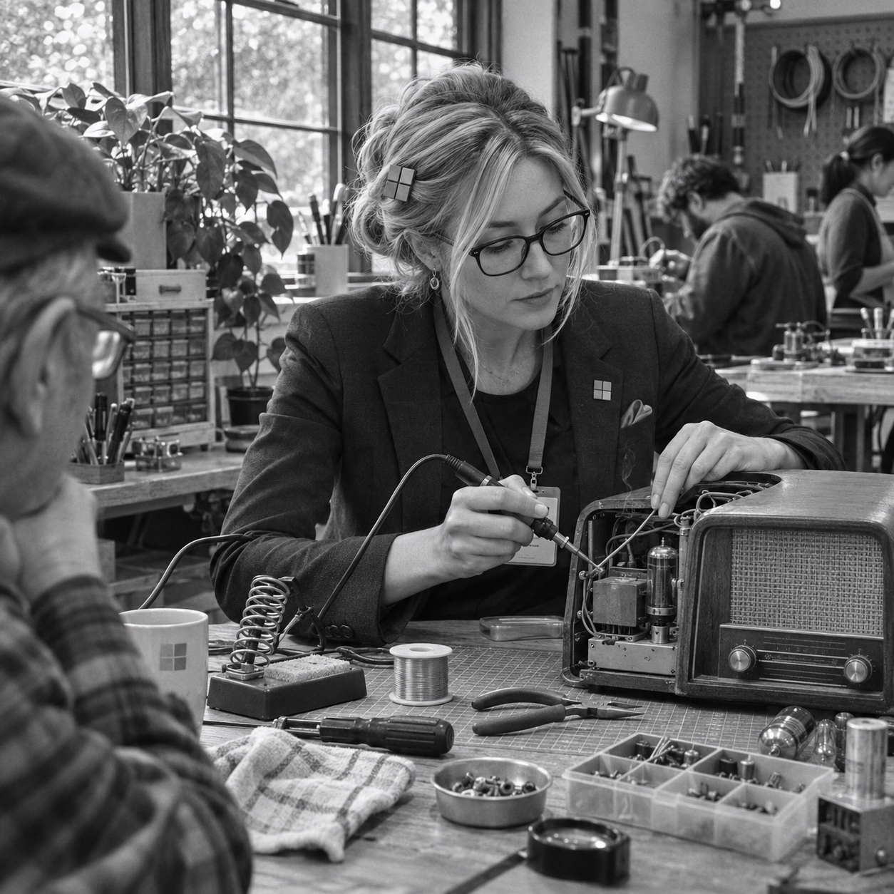
Documentary photography
Look from the hands at the radio to the people on the edges of the frame. The generated scene lets you practice asking what a photograph can support.

Photorealism
Find one object behind the office glass and one street feature reflected on it. Both sets of details are visible at once.
Read surfaces and patterns
Look at what carving, glaze, dye, and pattern show about the object and the people who use it.

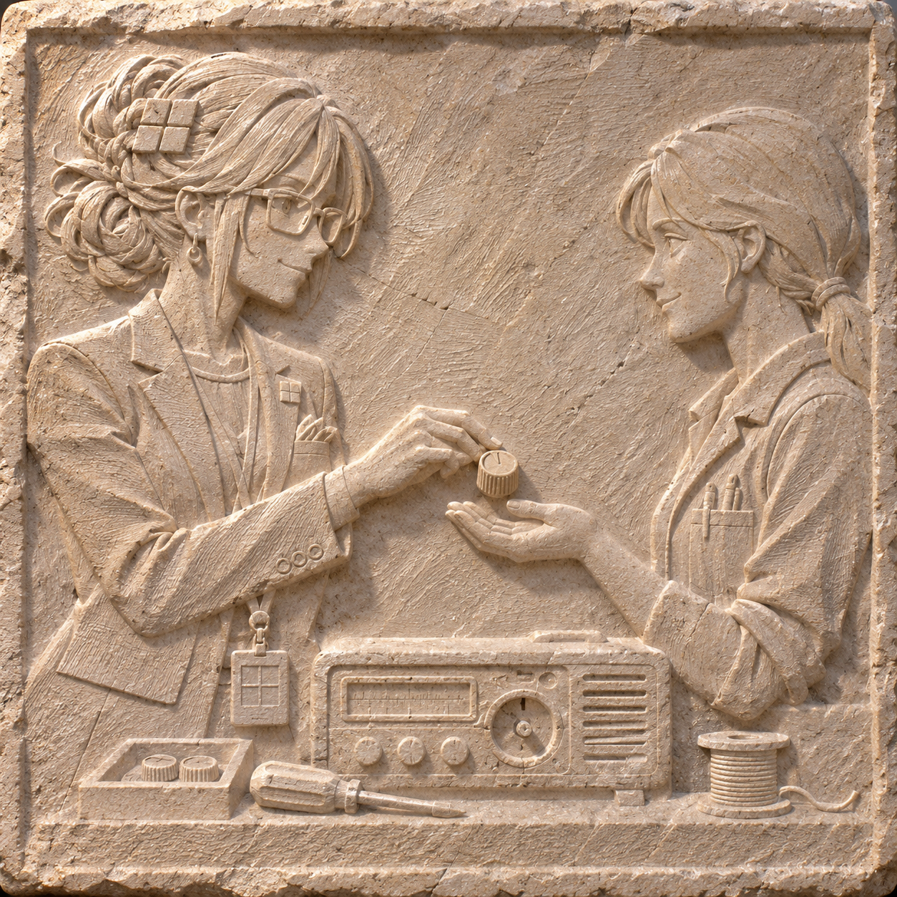
Carved relief
A thin shadow beside the hands shows that they project from the stone. Relief uses physical depth while remaining attached to a background.

Ceramic vessel and glazing
Compare the highlighted shoulder of the jar with the darker incised portrait. Glaze is a coating that fuses to the clay in firing.

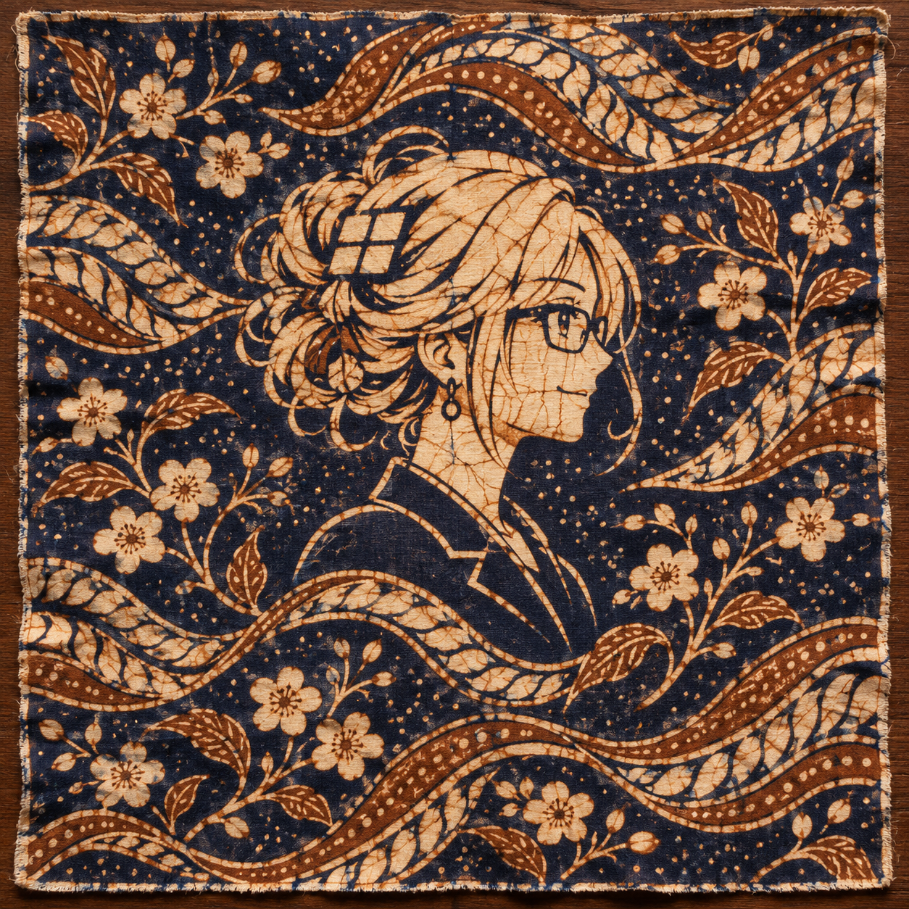
Batik
Look at the pale outlines and small dots among the leaves. In wax-resist dyeing, wax protects parts of the cloth from color.

Arts and Crafts
Find one repeating vine in the wall and related forms in the objects. Notice how the pattern has room to repeat without covering the figure.

Mithila painting
Start at the meal, then follow the repeated shapes from the dishes into the border. The drawing gives the setting and the people similar attention.

Narrative story quilts
Start with the shared rooftop meal and work outward to the smaller scenes. The fabric pieces provide both a picture and a route through a day.

Korean chaekgeori
Follow the notebook from Microsoft’s hand into the grid of shelves. Books and everyday objects can stand in for the person who uses them.

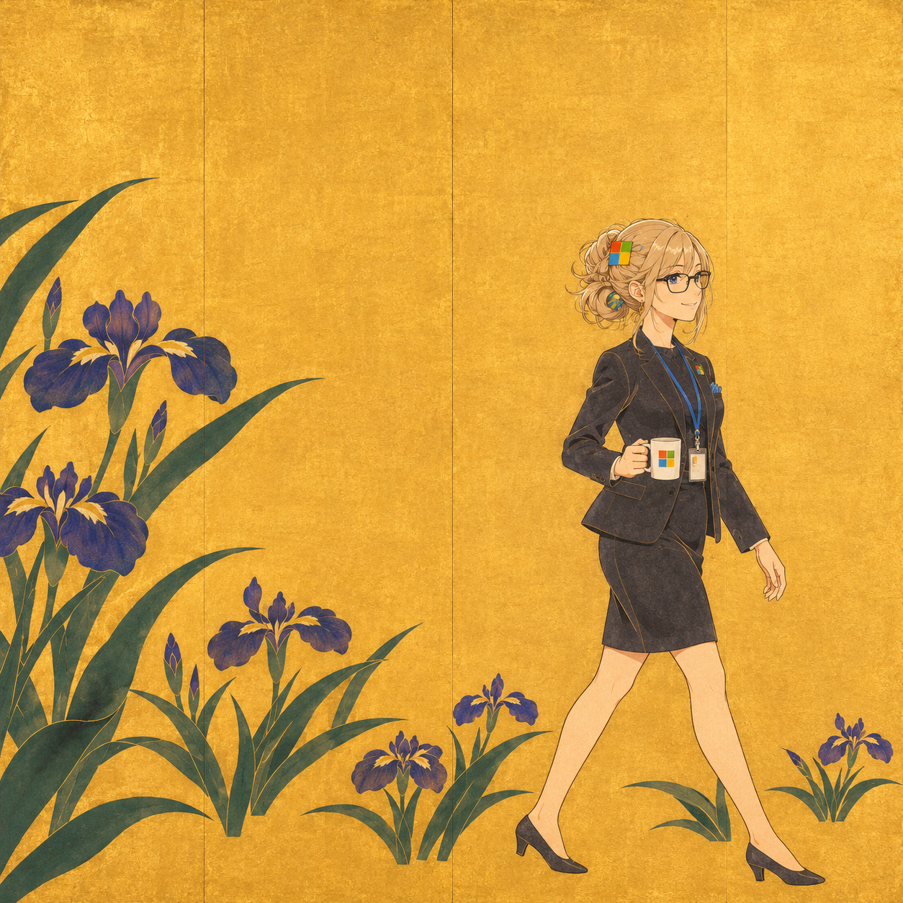
Rinpa
Trace the irises along the base of the gold screen. The empty gold creates pauses between their clusters.

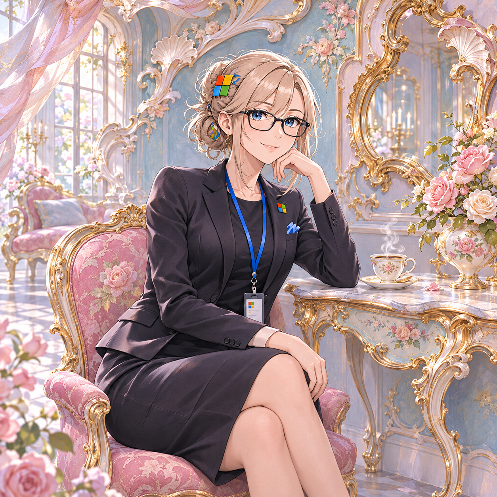
Rococo
Trace the shell-like curves from the wall to the chair and table. The room uses ornament to move your eye between objects. The Met on French Rococo furniture
Art Nouveau
Trace a plant stem or lanyard until it echoes the figure’s pose. The flowing outlines link decoration, character, and frame.

- Top left: Botanical arch
- The arch and curling stems frame her standing pose, then guide the eye back to her shoulders.
- Top right: Ribbon at the desk
- The curving lanyard connects the portrait to the desk and the motion of her hand.
- Bottom left: Ginkgo medallion
- The circle focuses attention on the glasses gesture. Repeated leaves extend the rhythm outward.
- Bottom right: Iris and reverse portrait
- The line of the turned figure echoes the iris stems, giving one side of the frame more visual activity.
Read across an image
Follow how a wall, vessel, window, page, or box leads the eye from one figure or event to another.

Ancient Egyptian wall painting
Read the three horizontal bands from arrival to closing time. Such bands are called registers.

Greek black-figure and red-figure vase painting
Compare the same handoff in black and orange. The black-figure technique incises details through dark slip. The red-figure technique paints lines inside the exposed clay shapes.

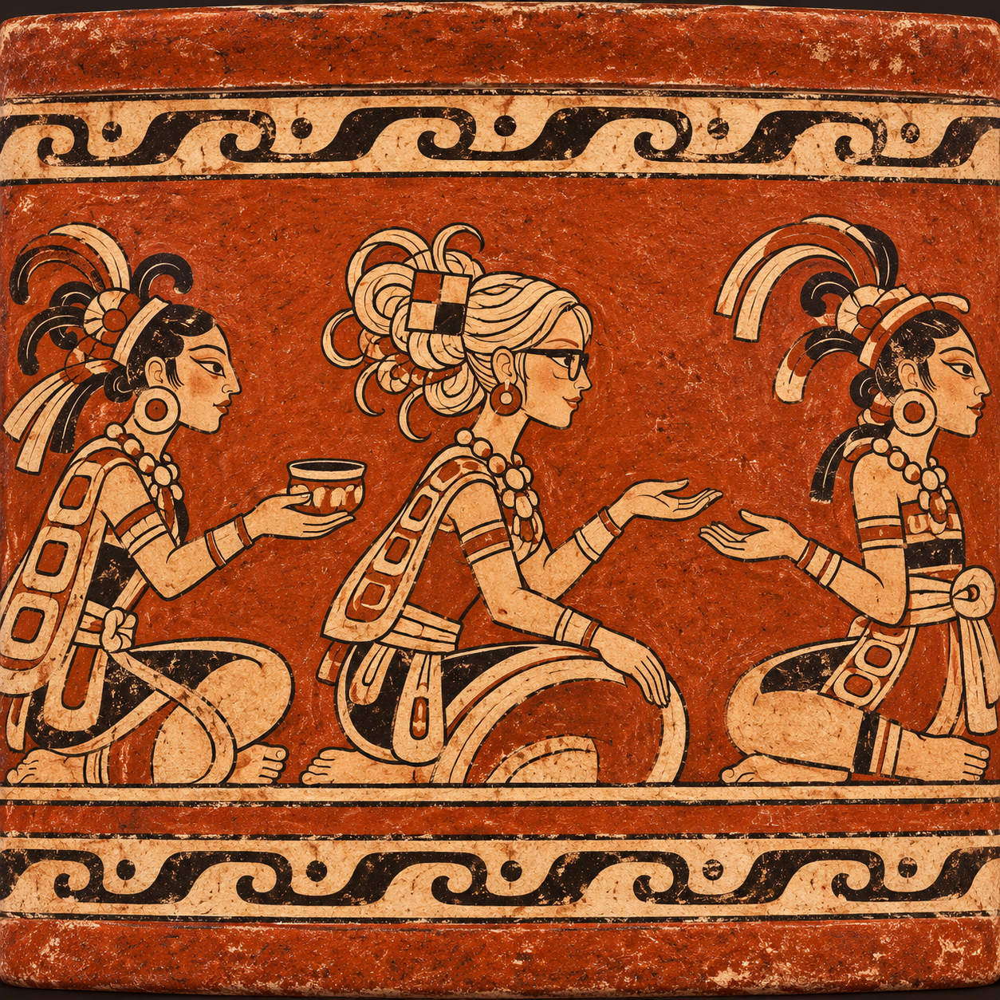
Classic Maya painted ceramics
Follow the cup from hand to hand across the unwrapped band. On a cylindrical vessel, turning the object would reveal the action in parts.

Buon fresco
Examine the painted workers near the surface texture. In buon fresco, pigment is brushed onto fresh lime plaster and sets as the plaster cures.
Byzantine-inspired mosaic
Look at the small tiles around the glasses and how they turn with the outline of the face. A single tile is called a tessera. Byzantine tesserae at The Met

- Top left: Gold wall portrait
- Gold pieces make the figure feel luminous. Dark ones give the glasses and jacket definition.
- Top right: Cobalt niche
- Cobalt makes a deep field inside the arch, so the figure reads as part of the niche.
- Bottom left: Floor medallion
- A circular border makes the portrait easy to orient on a surface seen from above.
- Bottom right: Face in tesserae
- Rows of small tiles turn with the face and change direction around the glasses.
Stained glass
Look at the dark lead lines and then at the colored light projected into the room. The image changes with the light passing through it. The Met on leaded glass

- Top left: Backlit portrait
- Dark leading ties the face and glasses into the network of colored panes.
- Top right: Four-color rose window
- Repeating shapes pull attention toward the center without relying on a single upright figure.
- Bottom left: Blue-and-amber stairwell
- The light projected by the window breaks into separate bands as it crosses the steps.
- Bottom right: Light across an empty desk
- The absent sitter is suggested by the glasses and badge under patches of colored light.

Medieval European manuscript illumination
Let the gold M guide you into the doorway, then follow its decoration into the small scene at the margin.
Persian manuscript painting
Look across walls, stairs, and terraces to see how several activities share a page. Pattern helps tell you when you have crossed into another space. The Met on architecture in Safavid paintings

- Top left: Office cutaway
- Stairs link stacked rooms, giving your eye a route through several activities.
- Top right: Courtyard briefing
- The pool and arcade divide a crowded courtyard into areas your eye can read in turn.
- Bottom left: Rooftop garden
- Terraces put near and far plants in view at once. Pattern tells one surface from another.
- Bottom right: Patterned reading room
- The ledger and relatively quiet figure remain clear beside dense textile patterns.

Mughal album painting
Notice the profile and little sprig before tracing the border. The scale of an album page invites you to see details up close.

Ayacucho retablo
Look at the computer on its two levels. The painted doors frame setup and public use as parts of one event.
Compose a scene and give it meaning
Use the same visual tools to answer larger questions. Where are you standing? What do you notice first? Whose story is being told?
Direct the viewer’s attention
Use perspective, arrangement, and light to place the viewer or make a moment seem important.
Renaissance perspective
Trace the edges of the table or floor tiles until they seem to meet. Linear perspective uses lines that converge to suggest depth. The Met’s guide to spatial depth

- Top left: Centered boardroom
- The boardroom lines meet near the far seat. The room quietly tells you which position matters.
- Top right: Off-center arcade
- The arcade pulls your eye sideways, letting a nearer figure interrupt the run of arches.
- Bottom left: Tiled office corridor
- Follow the floor joints and repeated doorways to see how the corridor recedes.
- Bottom right: Open window
- The window sets a near frame around a city that continues well beyond it.
Neoclassicism
Start with the straight columns and balanced poses. The studies borrow classical forms to give a person or event a public presence.

- Top left: Formal address
- Matching chairs and upright architecture give the central speaker a formal stage.
- Top right: Profile and column
- The column’s straight edge gives you a stable reference for the curve of the profile.
- Bottom left: Boardroom frieze
- Figures arranged across a shallow band let your eye read the gestures in order.
- Bottom right: Portrait with ledger
- The ledger steadies the portrait and lets one purposeful object explain the sitter’s role.
Baroque
Follow the strongest light and the longest diagonal. Together they show which moment deserves the closest attention.
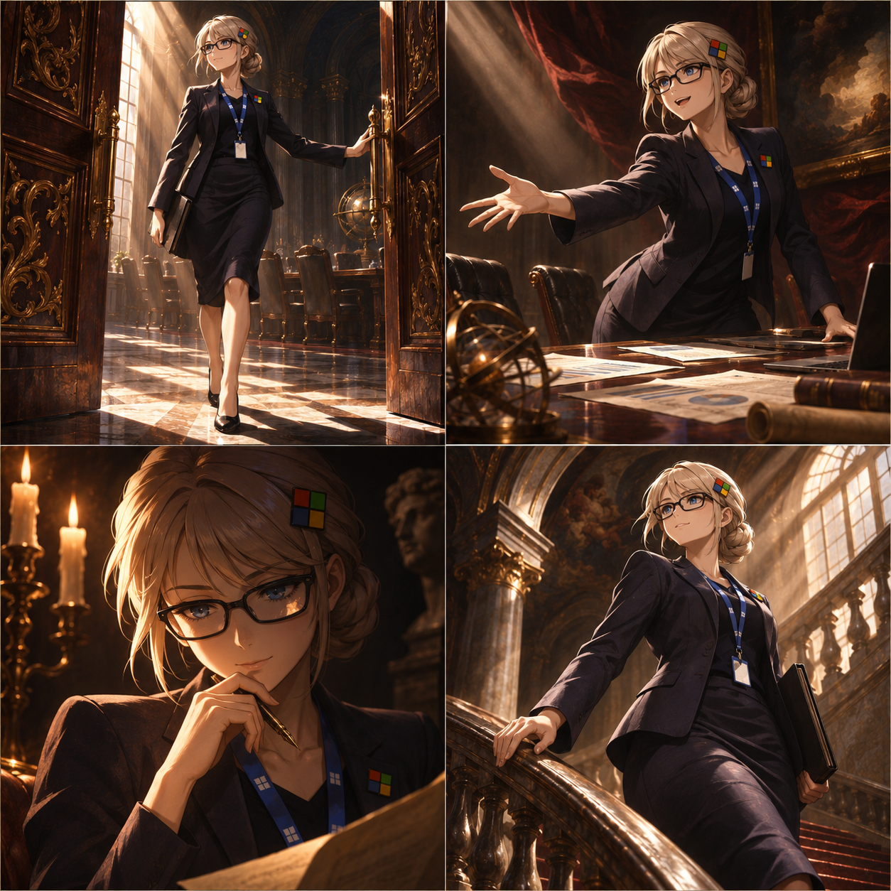
- Top left: Boardroom entrance
- The doorway is a bright vertical opening. The first glimpse of the figure becomes an event.
- Top right: Sweeping briefing
- The sloping table takes your eye into the room, then the raised arm sends it back across.
- Bottom left: Candlelit briefing
- A little warm light on the glasses makes the face readable in a scene with few visible details.
- Bottom right: Staircase portrait
- The stairs and railing aim up at the sitter. The low viewpoint makes her feel commanding.
Trompe-l’œil
Check whether an edge seems to belong to the picture or to something projecting in front of it. Trompe-l’œil means fool the eye. National Gallery of Art on trompe-l’œil

- Top left: Glasses across the frame
- The spectacles seem to sit partly in front of the painted frame. Their shadow helps sell the trick.
- Top right: Badge off the page
- The badge seems to lift off the page where its shadow crosses the illustrated surface.
- Bottom left: Shallow office cabinet
- Small contact shadows make shallow shelves appear deep enough to hold real tools.
- Bottom right: Hand through the doorway
- A reaching hand and folder seem to cross out of the painted doorway into your space.

Stylized 3D rendering
Look where the radio meets the bench, then compare the light on cloth and metal. The study separates shape, material, and lighting choices.
Make distance and atmosphere felt
Compare what scale, soft edges, and changing color do to a landscape.
Chinese ink landscape
Find the small figure, ferry, or pavilion in each scene. Pale washes and open paper let mountains and water extend far beyond them. The Met on Chinese landscape composition

- Top left: River commute
- A small ferry makes the open water feel wide. Pale banks merge with the mist.
- Top right: Mountain data center
- The building gives you a measure for the mountain. Darker near marks make the pale ridges feel farther away.
- Bottom left: Rain from a pavilion
- The firm roof edge holds the foreground while the rain softens the next layer of hills.
- Bottom right: Riverside handscroll
- The bends of the bank and clusters of trees guide you sideways at an unhurried pace.
Romanticism
Compare the size of the figure with the storm, atrium, or skyline. An overwhelming view can make her reaction feel important.

- Top left: Rooftop before the storm
- The storm takes up far more room than the person, giving her small outline an immense setting.
- Top right: Vast atrium
- Repeated arches pull the eye toward distant light and make the near figure feel small.
- Bottom left: Windswept bridge
- The long bridge carries the eye into the sky while the figure registers the wind at human scale.
- Bottom right: Lone office window
- One warm window lets you pick out a person in the dark spread of the city.
Impressionism
Compare the color of the jacket outdoors, beside a window, and on a wet street. Reflected light changes what a familiar color looks like.

- Top left: Dappled garden
- Patches of warm sunlight and cool shade connect the jacket to the garden.
- Top right: Rain at blue hour
- Storefront lights carry into the street as smudges of reflected color on wet paving.
- Bottom left: Window light
- Cooler shadows beside warmer window light give the face a sense of place and time.
- Bottom right: Riverside dawn
- The skyline fades into pale color so the nearer figure reads against morning air.

Pointillism
Look for the colored dots in a shadow, then view the whole image. From a distance they combine into a broader tone. Art Institute of Chicago on Pointillism

Tonalism
Look for the small warm reflection in the broad blue-gray landscape. Most shapes stay close together in brightness. Smithsonian American Art Museum on George Inness
Give a feeling or idea a shape
Read objects as clues, then see what happens when color, space, and ordinary things start to behave differently.

Pre-Raphaelite painting
Start at the letter, then notice the plants, fabric, and fallen flower. The scene gives small details enough attention to become clues. The Met on the Pre-Raphaelites

Dutch vanitas still life
Follow the hourglass, wilted flower, and closed laptop. A vanitas still life uses objects to invite reflection on time and loss.
Symbolism
Look for objects that have been given an unusual role. A chain, a pair of lenses, or a scale can suggest an idea about work.

- Top left: The chain of duty
- A chain of badges makes an ordinary lanyard look like something the wearer must carry.
- Top right: Procedure and instinct
- The two lenses put an ordered grid and loose shapes side by side as ways of seeing.
- Bottom left: A desk in the balance
- A desk on a balance scale gives an everyday burden a physical weight.
- Bottom right: The office after hours
- A colored window and small doorway figure give an empty office an unresolved meaning.
Fauvism
Compare the green face and orange room. Color organizes what you notice and how you feel about it.
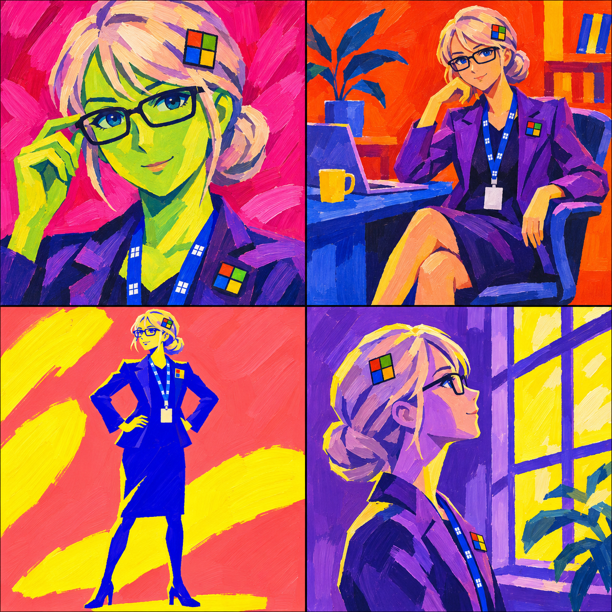
- Top left: Green and pink portrait
- Bright green moves across the face. Differences in brightness still define the glasses and eyes.
- Top right: Orange office
- The large orange field joins the room while cooler patches separate the furniture and figure.
- Bottom left: Cobalt silhouette
- A nearly solid cobalt figure reads clearly against sharp bands of warmer color.
- Bottom right: Violet and yellow window
- Violet and yellow carry the same color tension from the window to the sitter.
Expressionism
Look at what the room does around the figure. Lines lean, stretch, and close in to make a mood visible.

- Top left: Deadline pressure
- The red room seems to tilt inward around the desk, as though the space shares her urgency.
- Top right: Empty corridor
- Violet and stretched distances make the corridor feel lonesome around the small figure.
- Bottom left: Defiance
- A low viewpoint, angled marks, and an elbow set out from the body make the stance forceful.
- Bottom right: End of the day
- Uneven cool marks and a bent pose make fatigue spread into the room.
Surrealism
Identify the ordinary objects before looking at what they are doing. The desk and glasses become convincing parts of an impossible space.

- Top left: Flooded office
- A recognizable office makes water across the floor and a floating desk feel especially strange.
- Top right: Two skies
- The lenses hold incompatible skies while the face remains familiar.
- Bottom left: Desk staircase
- Repeated desks create a stair you can read visually even though you could never climb it.
- Bottom right: Sea behind the wall
- A small opening onto a vast sea gives an ordinary cubicle an impossible depth.
Show work and public life
Look at who gets attention, which details establish a place, and what a public image asks people to believe.

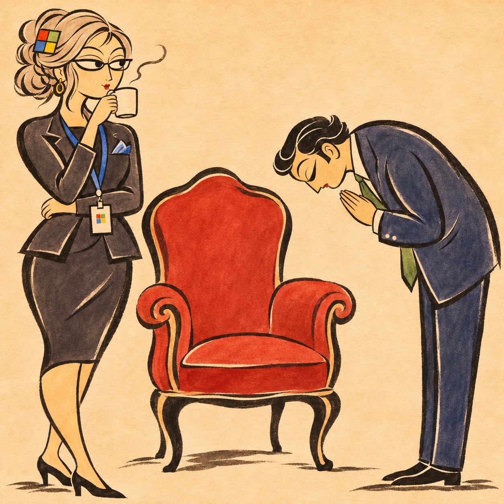
Kalighat painting
Read the bow, red chair, and sideways glance as a short visual joke. The main shapes stand out against a simple ground.

French Realism
The workers lean in over the radio. Notice how their hands and tools get the strongest attention.

American Regionalism
Look through the repair shop toward the small houses and utility lines. The town helps explain where the work fits.

New Objectivity
Look at the hand supporting her head, the papers, and the empty chair. The portrait leaves clues about the meeting in plain view.
Mexican muralism
Follow the cable and the workers’ gestures across the wall. A mural can give several people space to contribute to the action. MoMA on Mexican muralism

- Top left: Building the network
- Cable, figures, and tools connect the network installation into one continuous task.
- Top right: Night-shift repair
- Arms and tools meet at the equipment, making coordination visible across the wall.
- Bottom left: Library lesson
- Open books and screens connect people who are learning and helping each other.
- Bottom right: Four generations of work
- Repeated horizontal arrangements link eras. Changed tools show time passing.

Harlem Renaissance mural and illustration
Follow the bands of light from the open book to the readers and musician. Their activities share a rhythm across the wall.
Build rhythm, motion, and abstraction
Start with recognizable forms, then see how repetition, spacing, and color can carry the image.
Cubism
Follow the glasses across the overlapping surfaces. Some pieces show a frontal view, while others turn sideways or look down.

- Top left: Front and profile
- Two views of the face touch along hard edges, asking you to hold them together.
- Top right: Glasses across planes
- The glasses bridge color planes that break the rest of the face into parts.
- Bottom left: Cut-paper construction
- Broad scraps and a few familiar angles let a viewer assemble the figure mentally.
- Bottom right: Figure and desk
- Some desk surfaces tip toward you while the figure still faces front, compressing both into a shared structure.
Futurism
Trace where the hand, chair, or runner appears more than once. Repeated outlines put several instants into the same picture.

- Top left: Glasses in motion
- Overlapping positions let your eye replay the hand approaching the glasses.
- Top right: Station rush
- Repeated runners and converging platform lines carry the image in the same direction.
- Bottom left: Spinning chair
- Several chair positions describe a turn about one point.
- Bottom right: Typing sequence
- Echoing fingers turn a small typing action into a quick beat across the frame.

Orphism
Follow the circles from lamps into the puddles. The intervals between strong colors give the street a rhythm.

De Stijl
Find the glasses and lanyard in the black bars and primary-colored shapes. The grid still hints at a portrait. MoMA on De Stijl
Abstract Expressionism
Different marks make the paintings feel swept, quiet, crowded, or pressed. Look for the small clues to the original figure. MoMA on Abstract Expressionism

- Top left: Swept ink gesture
- A wide ink sweep establishes direction, with a few smaller marks hinting at glasses.
- Top right: Navy color field
- A small warm accent draws attention because the deep blue field is so large.
- Bottom left: All-over marks
- Crossings, splashes, and fragments distribute activity across the entire square.
- Bottom right: Four-color pressure
- Blocks of familiar color crowd against a scraped dark form and seem to push into it.

Minimalism
Compare the evenly spaced blocks with the blank wall and the person standing nearby. The gaps are part of the work. MoMA on Donald Judd’s Untitled
Op Art
Pick one grid and trace how its lines bunch together or spread apart. A still pattern can seem to bend or vibrate.
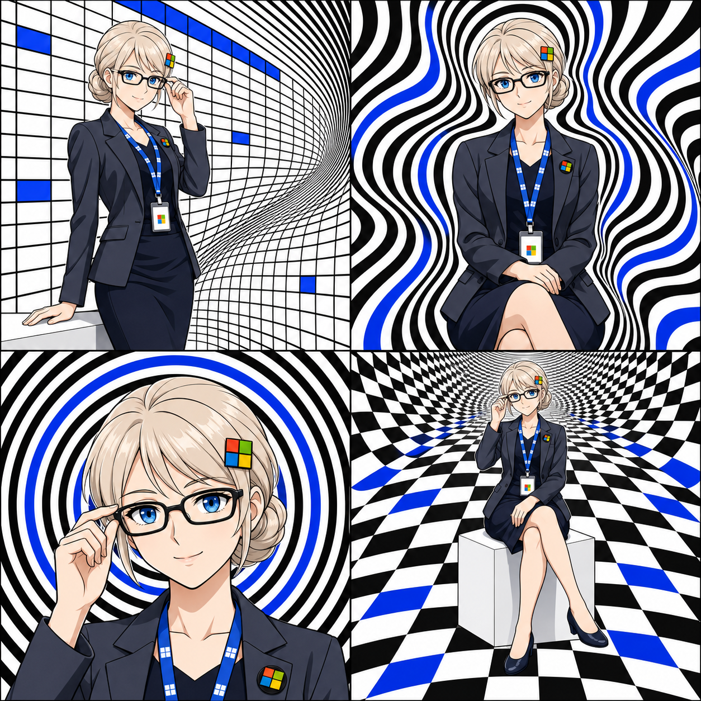
- Top left: Warped grid
- Closer grid lines make the flat page seem to bulge beside the steady figure.
- Top right: Vibrating stripes
- High-contrast stripes appear to vibrate. The solid jacket gives the eye a rest.
- Bottom left: Concentric rings
- Rings pull attention toward the glasses as the intervals between them change.
- Bottom right: Bending checkerboard
- The checks change size and direction, making a flat grid look like it bends.

Design for an audience in motion
Apply the same choices to a sign people pass, a room they cross, or a stage they watch.
Design a public message
Compare how posters and signs tell people what to notice, read, and do.
Dada photomontage
Notice what office object appears where you expect a face, a chart, or a person. The mismatch can be the joke. MoMA on Dada
- Top left: Calendar head
- A calendar takes the place of a face, making a person seem built out of appointments.
- Top right: Circular org chart
- Arrows take you around a chart whose improbable members make the system absurd.
- Bottom left: Stamp of approval
- An enormous approval stamp makes a routine office procedure look out of proportion.
- Bottom right: Office-scrap portrait
- Stationery and photographs turn into facial features. Their original uses linger in the portrait.
Constructivism
Follow a diagonal or a row of blocks through each poster. Text, photo fragments, and shapes share the work of directing attention.

- Top left: Diagonal ascent
- Stair shapes and a leaning figure direct the eye up along one strong axis.
- Top right: Profile and wedges
- A circle and sharp wedges give a small profile the force of a poster symbol.
- Bottom left: Desk photomontage
- Photographic fragments and red planes put ordinary office tools on a dramatic new scale.
- Bottom right: Modular portrait
- The frontal portrait anchors the grid while the surrounding blocks set its pace.
Bauhaus graphic design
Look at what you read first on the lecture and library posters. Size, spacing, and direction make information easier to use. MoMA on Herbert Bayer
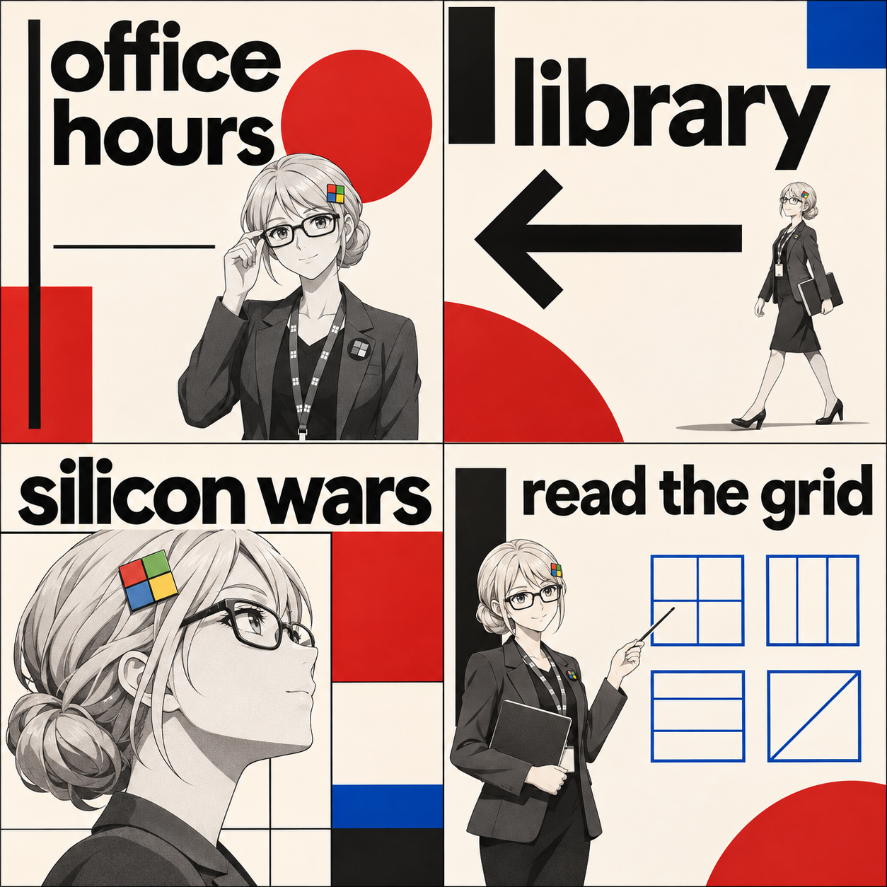
- Top left: Lecture poster
- A big heading claims the first glance. Portrait and circle guide the eye after it.
- Top right: Library wayfinding
- One arrow and one word can be read while walking because space separates them from distractions.
- Bottom left: Magazine cover
- The cropped profile and headline use different sizes but share alignments.
- Bottom right: Training poster
- A pointing figure turns the diagrams into something you can start to read immediately.
Art Deco
Follow the stepped outlines, rays, and strong central lines. Symmetry, where two sides balance, can make a figure seem commanding.

- Top left: Skyscraper sunburst
- The central figure gains height from the matching stepped towers and radiating lines.
- Top right: Diagonal profile
- Diagonal bands make the profile feel quick and keep the glasses distinct.
- Bottom left: Boardroom symmetry
- Balanced panels and an upward view lend a seated figure a sense of authority.
- Bottom right: Octagonal close-up
- An angular frame gives the close-up structure as the glasses hold the likeness.

Swiss Style
Read the title, day, and hours, then compare their left edges with the photograph. This is a grid at work.
Pop Art
Look at how a repeated portrait or oversized badge borrows the visual force of an advertisement.

- Top left: Comic close-up
- Heavy outlines and printed-looking dots give the glasses adjustment the force of a comic beat.
- Top right: Screenprint repetition
- Offset copies of the same face make repetition and color part of what the image is about.
- Bottom left: Badge poster
- A badge enlarged to poster scale becomes the subject while the person shows how big it is.
- Bottom right: Office icons
- A few office objects become bold pictorial signs that can be recognized quickly.

Psychedelic poster art
Trace how the letters bend around the figure. High-contrast colors and dense curves make reading part of the visual experience. Cooper Hewitt on psychedelic posters
Imagine a different everyday life
See how a room or object can tell you what a future values and who gets to help shape it.

Space Age design
Find the rounded console, bold orange, and dials that make a workspace resemble a spacecraft interior. Cooper Hewitt on Space Age design

Memphis design
Look at which surface catches your eye first: the zigzag desk, tilted lamp, or speckled finish. The Met on Ettore Sottsass

Afrofuturism
Follow the blueprint toward the Black librarian and her collaborators. The scene asks who gets to plan and share an imagined future. Smithsonian’s A History of Black Futures
Guide someone through a place
Notice how architecture, light, and position change what a visitor can see and feel.

Precisionism
Compare straight factory walls with the curve of the pipes. Hard-edged planes give the machinery a clear order. Smithsonian American Art Museum on Charles Sheeler

Brutalist architecture
Look up from Microsoft to the underside of the stairs. Exposed concrete surfaces and deep shadows make the structure feel heavy. MoMA on Brutalist architecture

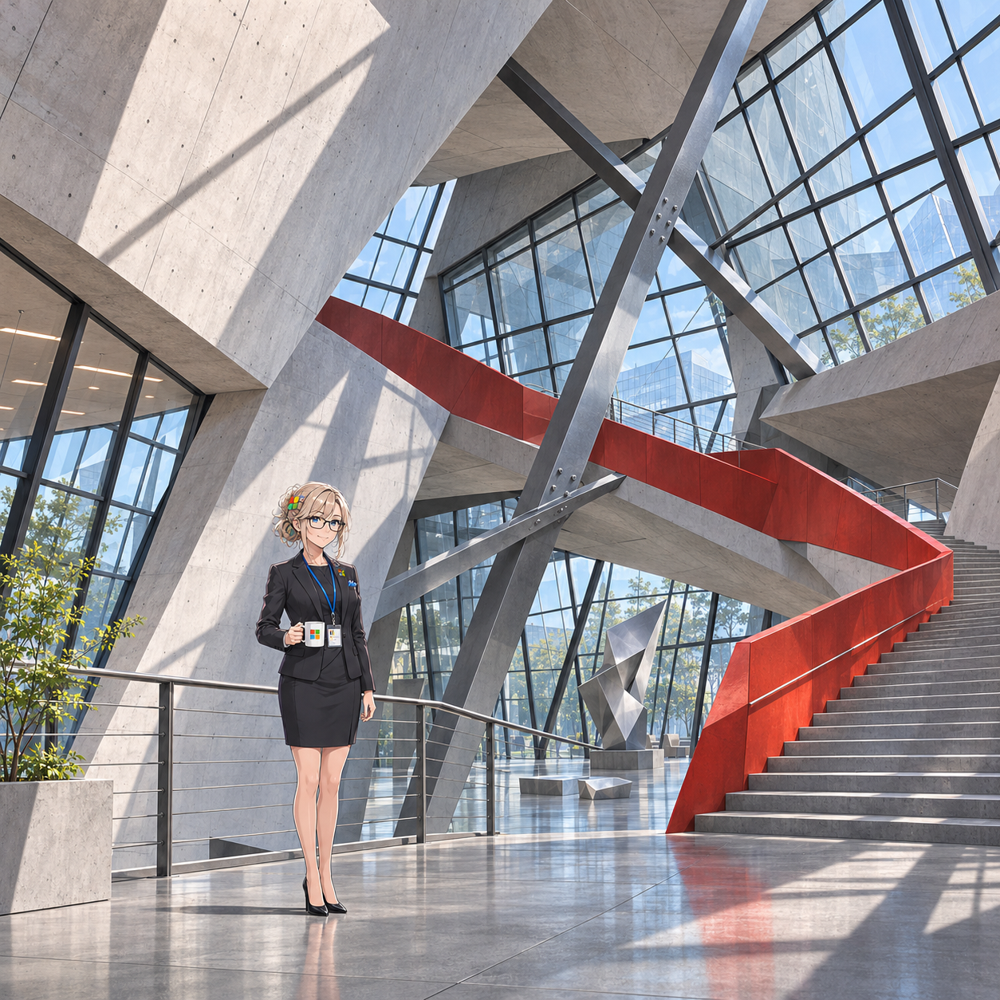
Deconstructivist architecture
Follow the red handrail where it cuts across the leaning steel. A familiar route runs through a space whose angles compete.

Land Art
Look at the stone openings and the bright patch on the ground. The land, the sun, and the time of day are part of the work.

Light and Space
Compare the sharp doorway with the violet area whose edges are hard to locate. Light affects what you think the room’s surfaces are doing.
Show a gesture through time
Compare how shadows, sets, animation, and moving objects make an action legible.

Wayang kulit
Trace the rods and the punched holes in the silhouettes. The backlight makes some parts of the leather puppet bright from the audience’s side.

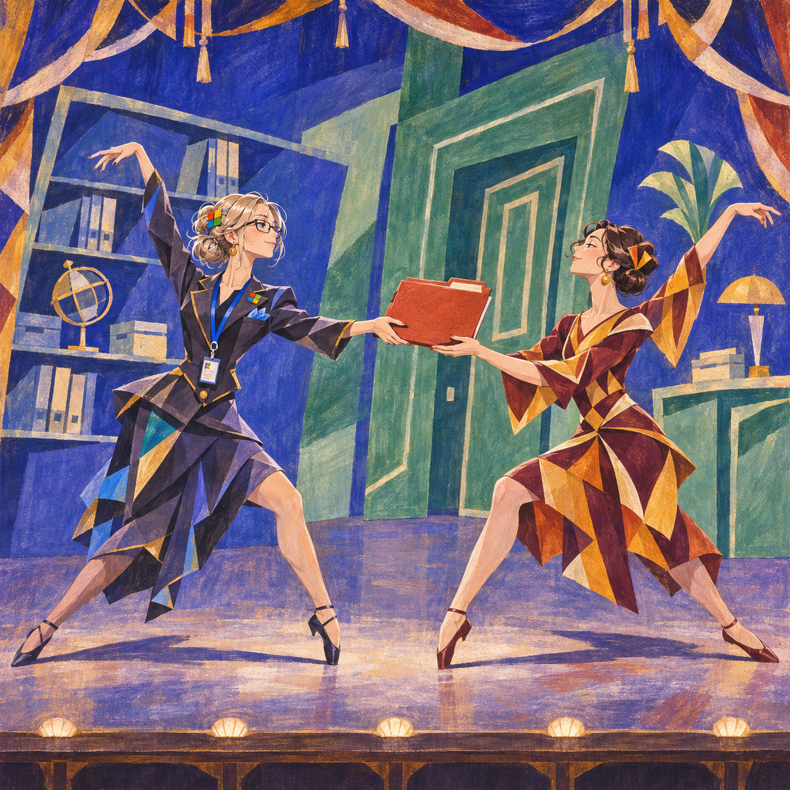
Ballets Russes stage design
Follow the raised arms toward the red folder. The doorway, clothing, and stage lights all help make the handoff readable.

Stop-motion
Read the four frames left to right, then down. The camera stays fixed while the puppet’s hand and the radio light change.

Gutai
Look from the torn opening to the paper on the floor. The material holds evidence of a person moving through it.

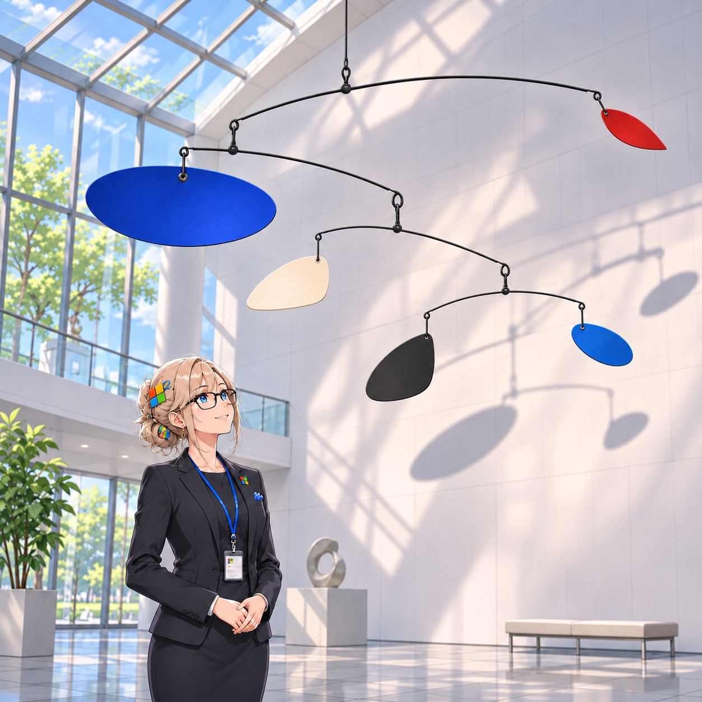
Kinetic sculpture
Find the balance point on one arm of the mobile. Imagine the shapes and shadows changing as the arm turns.
Video game graphics through the eras
Follow Microsoft through seven generated studies of radio repair. Compare how pixels, polygons, and light make her readable. The late-1990s examples show approaches that coexisted.
From sprites to ray tracing
Start with the character’s outline. Then compare what each look adds to the room, the materials, or the light.

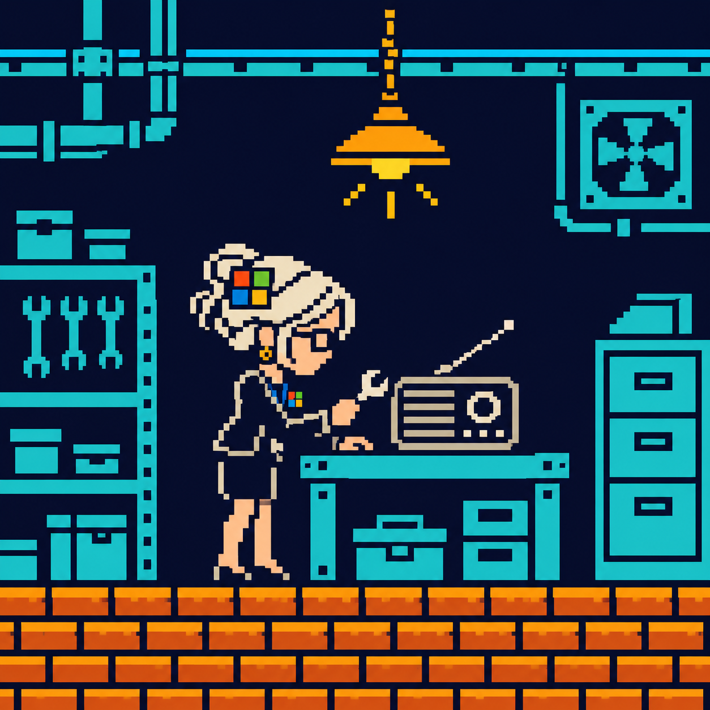
NES-era 8-bit sprites
Find the hair, dial, and tool in a handful of bright pixel clusters. A stripped-down palette still makes the repair action readable.

SNES-era 16-bit color
Compare the saturated foreground with the cooler layers behind the window. The palette separates the action from the scenery.

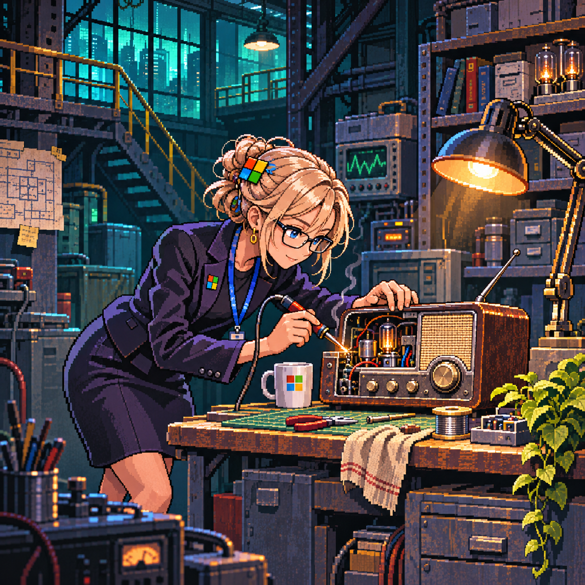
Original PlayStation 2D sprites
Find the fine detail in the character sprite and painted workshop. The scene suggests depth through overlapping layers in a side-on view.

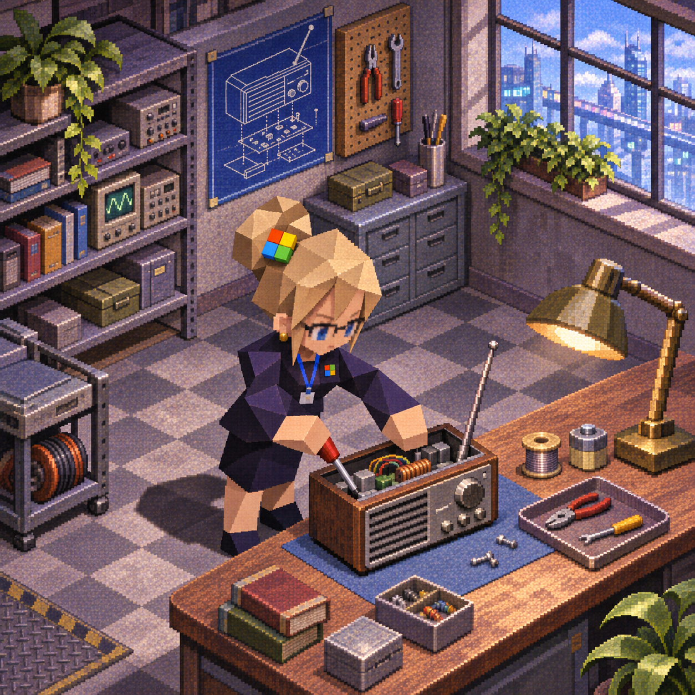
Original PlayStation low-poly RPG
Compare the blocky hair and hands with the detailed room. A background prepared in advance can sit behind a simple model that moves.

Late-1990s arcade fighting 3D
Check the stance from head to shoes. A closer full-body view makes the joints and weight shifts easier to see.

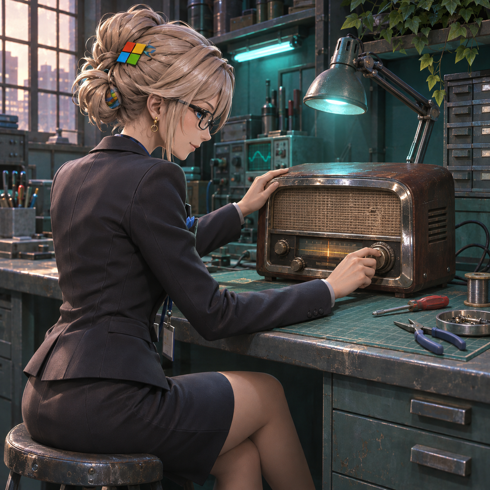
PS3 and PS4-era 3D
Compare the smooth outline of the hand with the smaller scuffs on the equipment. Shape and texture can carry different kinds of detail.

PS5-era ray-traced lighting
Look at the lamp glow and the reflection of the hands and radio in the bench. The study simulates one visible effect of modern ray tracing.
How to read the style index
Start with what you can point to in the picture. Then ask what that choice makes you notice or feel. Hover over or focus an image link to preview it. Use the circled A to check an answer, and open a study’s info button for its historical examples.
Shapes, marks, and layers
What makes a character recognizable at a glance?
Compare Anime cel shading · Minimal flat cel · Pixel art · One-bit silhouette · NES-era 8-bit sprites. The cel pose stays clear because the dark jacket, bent knee, and pale gap under the arm have distinct shapes. The one-bit study keeps that gap using just two values. In the NES workshop, the bright hair and tool are small clusters against a dark wall. Try shrinking each image. The shapes that survive are the details earning their space.
How many ways can you create a dark area?
Compare Manga ink and screentone · Dot screentone · Pen and ink illustration · Graphite drawing · Charcoal drawing · Three-value block-in. Manga dots make an even gray from separate marks. The ink handoff joins the sleeve into one strong black shape. Graphite builds gray through closely spaced strokes around the badge. Charcoal groups the suit, seat, and skin into three broad tones. Choose a method by asking whether you need a clean sign, a gradual shadow, or the texture of a mark.
When do neighboring colors blend in your eye?
Compare Colored pencil · Crosshatched shadows · Soft pastel · Broken color · Pointillism. Indigo and violet pencil lines cross in the shadows, so the dark suit still shows different colors. Pastel puts warm and cool strokes beside each other at a larger scale. Pointillism uses dots small enough to read as broad tones from a distance. Step back and see which colors you can still pick out as separate marks.
How can an edge suggest distance or quiet?
Compare Ink wash · Watercolor · Wet-on-wet watercolor · Chinese ink landscape · Rain from a pavilion · Tonalism. Diluted ink lets the window fade around a dark shoulder. The watercolor keeps the glasses sharp while softening clothing and air. In the rain landscape, a firm roof makes the pale hills feel far away. Tonalism makes the river and mist close in color and brightness, so one warm reflection becomes enough to hold your eye.
What changes when paint covers, blends, or shows through?
Compare Gouache · Flat color blocks · Egg tempera · Acrylic painting · Oil painting · Impasto · Digital painting · Textured digital. Gouache’s solid seat and suit show how an opaque layer can redraw an edge. Egg tempera builds a turn with many small strokes. In the acrylic study the blue covers orange, while the thin violet lets it through. The oil study simulates raised ridges, and digital brushes use marks to suggest a tactile jacket. Look for the boundary between two marks to tell which effect you are seeing.
When does a shape become a clue or a joke?
Compare Paper collage · Layered textures · Vector illustration · Dada photomontage · Calendar head. In paper collage, overlap tells you which cutout sits on top. The vector-like glasses and dial use repeated circles to connect unrelated objects. In Dada, a calendar takes the place of a face, making a joke about a person whose life is made of appointments. Ask whether the pieces are joining a form, creating a pattern, or changing an object’s meaning.
Prints, cameras, and objects
Which part of a printing surface leaves the darkest mark?
Compare Woodblock-inspired print · Four-ink contour · Linocut · Copperplate etching · Lithography · Screenprinting. The raised parts of wood and linoleum carry ink, leaving cuts pale. In etching, ink sits inside grooves and prints as thin dark lines. Lithography transfers a greasy drawing from a flat surface and can preserve its grain. Screenprinting pushes ink through a stencil. This explains why the linocut folder has a bold pale edge while the etched machinery has fine dark outlines.
What can a picture gain by cutting something off?
Compare Ukiyo-e · Rainy commute · Pictorialist photography · Original PlayStation 2D sprites. Ukiyo-e cuts the umbrella to make the commuter feel caught in passing. The Pictorialist study lets the mist and soft street edges swallow details, giving the atmosphere room. The PlayStation-era 2D view keeps the repair action prominent and lets layered scenery continue beyond the frame. In each, imagine stepping back and ask what would compete for attention.
What can a photograph tell you, and what still needs a caption?
Compare Cyanotype · Documentary photography · Photorealism. The cyanotype study simulates a direct trace of a badge and ferns, which would record shape and how much light got through. The fictional repair-shop image gives you a point of view but cannot establish where or when anything happened. The Photorealist office looks like a view through a lens, even as reflections make it hard to separate inside from outside. A convincing likeness and a trustworthy record are different questions.
How do you tell a line from a groove or a shadow?
Compare Carved relief · Ceramic vessel and glazing · Greek black-figure and red-figure vase painting. Relief casts a thin shadow next to the raised hands. Glaze can look darker where it pools in an incised line. On the black-figure side of the vase study, some details appear scratched through a dark layer. On the red-figure side, dark brush lines describe the exposed clay-colored figure. In each case, ask what happened to the surface itself.
When does a pattern make a scene easier to read?
Compare Batik · Arts and Crafts · Mithila painting. Batik repeats flowers and pale lines across fabric, so the rhythm can survive a fold. The Arts and Crafts interior repeats the vines at a scale that links wallpaper and furnishings. Mithila uses repeated forms around the meal to connect dishes, borders, and people. Point to one repeat that moves your eye back toward the main action.
How can one surface show several moments?
Compare Ancient Egyptian wall painting · Narrative story quilts · Classic Maya painted ceramics · Ayacucho retablo. The Egyptian study uses strips like rows of panels. The quilt puts the meal at the center and earlier tasks in the corners. The Maya-style band leads the eye around a vessel from one gesture to another. In the retablo, the shared computer connects setup and public use across two levels. Each arrangement gives you a different route through time.
What happens when light is part of the artwork’s material?
Compare Buon fresco · Byzantine-inspired mosaic · Gold wall portrait · Stained glass · Blue-and-amber stairwell. Fresco color sits in the plaster and can be read across a wall. Mosaic assembles small pieces that catch light differently as you move. Stained glass sends colored light into the room, and the stairs break it into new shapes. Notice whether the light lets you see a surface, makes it shimmer, or extends the work beyond the surface.
How does a page decide where your eye travels?
Compare Medieval European manuscript illumination · Persian manuscript painting · Office cutaway · Mughal album painting. The illuminated M gives you an opening and sends you along the border. The Persian cutaway uses stairs to link activities in stacked spaces. The Mughal album study slows the pace with a single profile, sprig, and decorated margin. A big initial, a route through a building, and a quiet frame serve different reading speeds.
What can a decorative line do besides fill space?
Compare Rinpa · Rococo · Art Nouveau · Ribbon at the desk. Irises punctuate open gold and give the screen a measured rhythm. Rococo curls carry the eye from the room to the chair and cup. The Art Nouveau lanyard turns into a path between Microsoft and her desk. Trace one curve in each, then see what part of the picture it leads you to.
Attention, feeling, and storytelling
How can a room tell you who matters?
Compare Renaissance perspective · Centered boardroom · Neoclassicism · Formal address · Baroque · Boardroom entrance. The boardroom lines converge near the far seat, drawing attention to its occupant. In the formal address, repeated rows and a steady center give the speaker authority. The Baroque doorway uses a bright shaft of light to make an arrival feel significant. Before you read a face, look at the path the room creates.
What makes a hand or tool seem to share your space?
Compare Trompe-l’œil · Hand through the doorway · Stylized 3D rendering · PS5-era ray-traced lighting. The trompe-l’œil folder crosses a painted boundary, making the hand seem to project out of it. The stylized 3D study uses the dark shadow where the radio meets the bench to give it weight. In the PS5-style image, the reflected hand and lamp connect the objects with the polished surface. Look for a cue that would change if the object were moved.
Can weather or color tell you how a place feels?
Compare Impressionism · Rain at blue hour · Fauvism · Green and pink portrait · Romanticism · Rooftop before the storm · Expressionism · Empty corridor. In Impressionism, storefront lights echoed on wet paving make the hour and weather visible. The Fauvist face uses bright green to give the portrait intensity. The Romantic storm overwhelms the small figure, while the stretched violet corridor makes her feel isolated indoors. Identify which cue comes from color, which from distance, and which from distortion.
How can an object suggest a story you cannot see?
Compare Korean chaekgeori · Pre-Raphaelite painting · Dutch vanitas still life · Symbolism · A desk in the balance · Surrealism · Desk staircase. The shelves in Chaekgeori suggest the owner’s interests through objects they keep. The letter and flower ask you to imagine an earlier event. The hourglass makes the end of the workday feel like time running out. A desk on a scale gives work weight, and a staircase of desks makes that burden into an impossible place you can imagine getting stuck in.
What kinds of detail make work feel ordinary?
Compare Kalighat painting · French Realism · American Regionalism · New Objectivity. Kalighat turns a bow and empty chair into a pointed joke. French Realism gives the repairers’ hands and tools the center. Regionalism puts similar work next to a visible town. New Objectivity leaves the coffee, papers, and empty seat to tell you about a meeting. Each asks you to read a different piece of everyday evidence.
How does a public mural show who contributes?
Compare Mexican muralism · Night-shift repair · Harlem Renaissance mural and illustration · Soviet Socialist Realism. The repair mural sends several arms and tools toward shared equipment. The Harlem Renaissance study links readers and a musician through the bands of light. The Socialist Realist study points the whole group upward into the same bright direction, presenting confidence as an ideal. Compare who starts each action and whose work the arrangement helps you notice.
How much can you remove before the face disappears?
Compare Cubism · Glasses across planes · De Stijl · Pixel art · One-bit silhouette. Cubism breaks the face into viewpoints yet lets the glasses cross several planes. De Stijl finds a likeness in mostly black bars and colored rectangles. The one-bit pixel study keeps the glasses and hand in an even smaller set of shapes. Cover the color or look from farther away and see which sign tells you who is there.
Can a still picture feel like it is moving?
Compare Futurism · Station rush · Orphism · Op Art · Concentric rings. Futurism repeats stages of the runner’s movement. Orphism uses circles and colors to make your eye move among lamps and reflections. Op Art shifts the spacing of rings so the pattern seems more active than the person in front of it. In each, look for whose motion you are seeing: the subject’s or your eye’s.
What can repetition make you notice besides the subject?
Compare Abstract Expressionism · Navy color field · Minimalism · Generative and plotter art. In the blue Color Field square, a small warm accent counts because its surroundings occupy so much space. Minimalism lets the intervals between repeated blocks become visible. Plotter-like curves use close spacing for shadow and wider gaps for light. Compare one small variation and consider why it matters within a steady pattern.
Design, places, and movement
How does a sign tell you what to read first?
Compare Constructivism · Diagonal ascent · Bauhaus graphic design · Library wayfinding · Swiss Style. Constructivist diagonals make the eye move before you read a word. The Bauhaus library arrow combines direction and label so you can use it while walking. The Swiss poster sorts the clinic title, day, and hours by size and alignment. Test the three at a glance and notice whether each leads you to movement, a destination, or a schedule.
How can a poster make you feel something before you read it?
Compare Art Deco · Skyscraper sunburst · Pop Art · Office icons · Psychedelic poster art. Art Deco’s stepped towers and centered figure feel ceremonial. Pop Art makes a mug, glasses, and laptop compete like memorable commercial signs. The psychedelic letters bend through saturated color, slowing you into the image. The amount of time a poster asks for is part of what it communicates.
Who gets to shape the future in a design?
Compare Space Age design · Memphis design · Afrofuturism. The Space Age study puts optimism into rounded controls and a view of Earth. Memphis turns everyday furniture into a playful object with uneven shapes and patterned surfaces. The orbital library puts a Black librarian and collaborators in charge of a public project. Ask whether the most prominent part of each future is a machine, a room, or a group of people.
How do you sense a building’s size or weight?
Compare Precisionism · Brutalist architecture · Deconstructivist architecture. A small figure sets the scale of broad walls and pipes in Precisionism. The underside of the concrete stairs makes the Brutalist room feel heavy overhead. The red rail gives your eye a route through the leaning forms in the Deconstructivist lobby. Imagine walking each route and notice where your body would slow down or look up.
What changes when you move or wait?
Compare Land Art · Light and Space · Kinetic sculpture. At the stone opening, the path of sunlight would move across the ground. In the violet room, walking closer could change which edge seems like a wall. A mobile turns and casts different shadows. Try naming the moving part in each: the sunlight, the viewer’s position, or the work itself.
How do you read an action in a shadow, onstage, or one frame at a time?
Compare Wayang kulit · Ballets Russes stage design · Stop-motion · Gutai. The puppet silhouettes make the folder handoff readable in profile. Onstage, costumes and raised arms frame the same gesture for a distant audience. The stop-motion study fixes the camera so small changes at the dial become the action. Gutai shows a tear and scraps, letting you reconstruct movement from what it left behind.
Game graphics and technology
What changes when a game sprite gains more colors and detail?
Compare NES-era 8-bit sprites · SNES-era 16-bit color · Original PlayStation 2D sprites. The NES sprite uses a pale hair shape and bright tool against a dark room. The SNES workshop adds blue and gold shades and cooler scenery beyond the window. The PlayStation 2D study enlarges the sprite so hand posture and expression can carry more of the scene. Compare the silhouette first, then look for the details each era adds around it.
What does each 3D game era spend its detail on?
Compare Original PlayStation low-poly RPG · Late-1990s arcade fighting 3D · PS3 and PS4-era 3D · PS5-era ray-traced lighting. The early RPG puts much of the detail in a prepared background and lets a blocky figure move through it. The fighting-game view spends more on the full-body stance. The HD-era study gives hands and contours a smoother shape and carries smaller scuffs in the surfaces. The PS5-style bench reflects the character and light, so some of the added detail describes relationships between objects.
Close looking across several periods is also the approach used in The Met’s guide to looking at paintings.
Soviet Socialist Realism
Trace the cable upward to the pointing arm and bright windows. The group is arranged to suggest confident, coordinated progress.